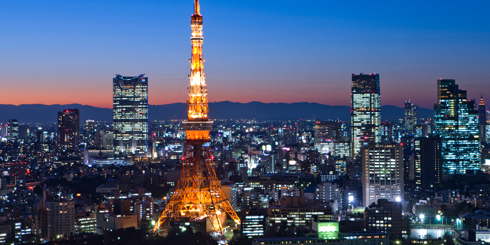
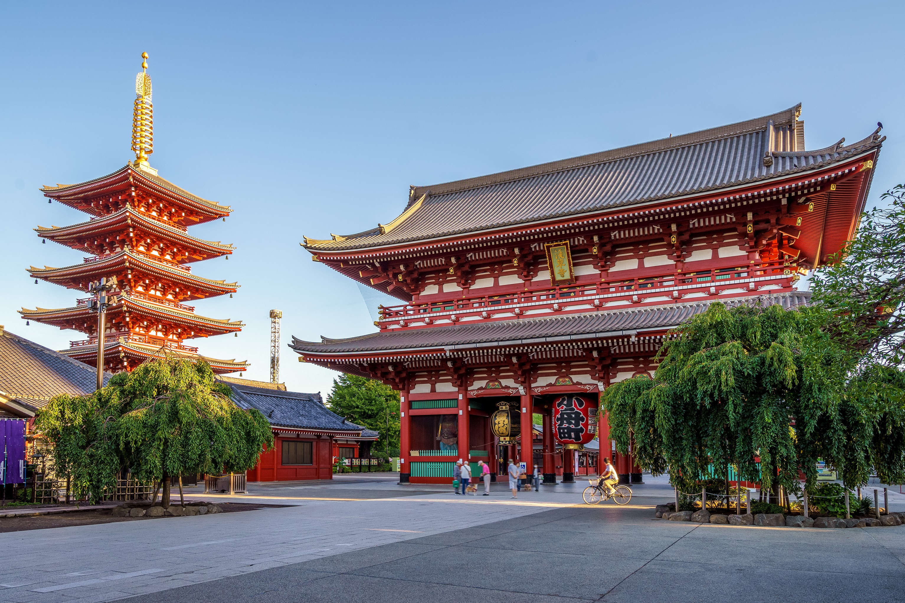

東京タワー
東京タワーは、1958年に完成した高さ333メートルの電波塔で、東京のランドマークとして広く知られています。エッフェル塔をモデルにしたデザインで、昼間は赤と白に塗られ、夜には美しいライトアップが行われます。展望台からは東京の絶景を一望でき、特に夜景が人気です。塔内にはレストランやショップもあり、観光客にとって訪れる価値のあるスポットです。

浅草寺

浅草寺は東京の台東区に位置する、628年に建立された歴史ある仏教寺院です。雷門の巨大な提灯は有名で、観光客にとって人気の写真スポットです。本堂に続く仲見世通りには、多くの土産物店や飲食店が並び、賑やかな雰囲気を楽しめます。浅草寺は東京の伝統文化を感じることができる場所であり、四季折々のイベントも開催されています。歴史と文化が融合するこの寺院は、訪れる価値のある場所です。